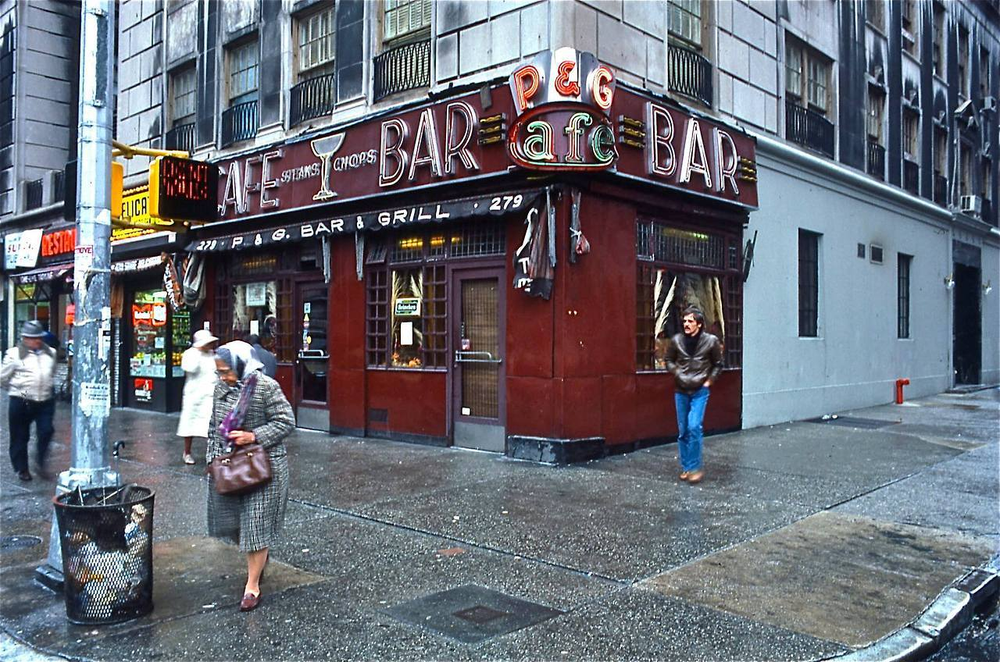
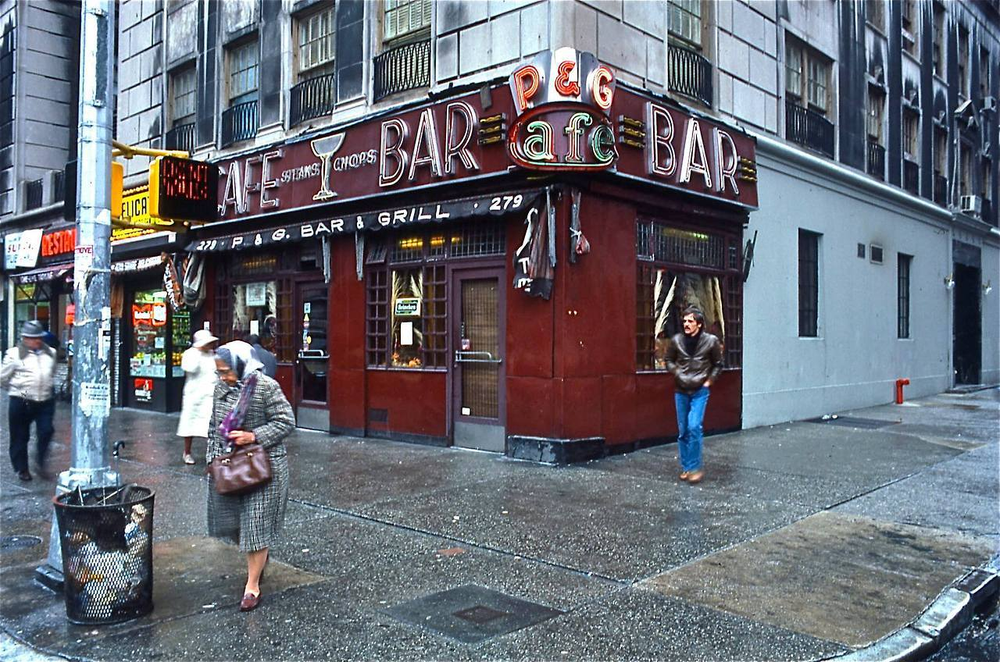
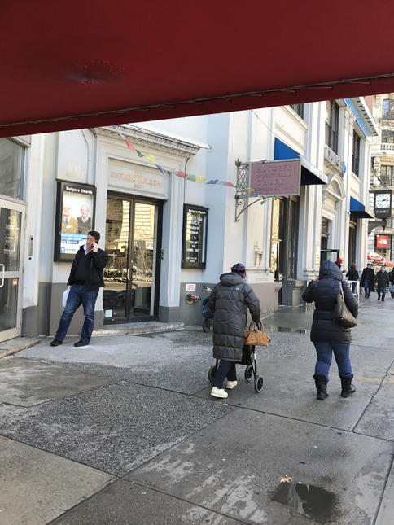
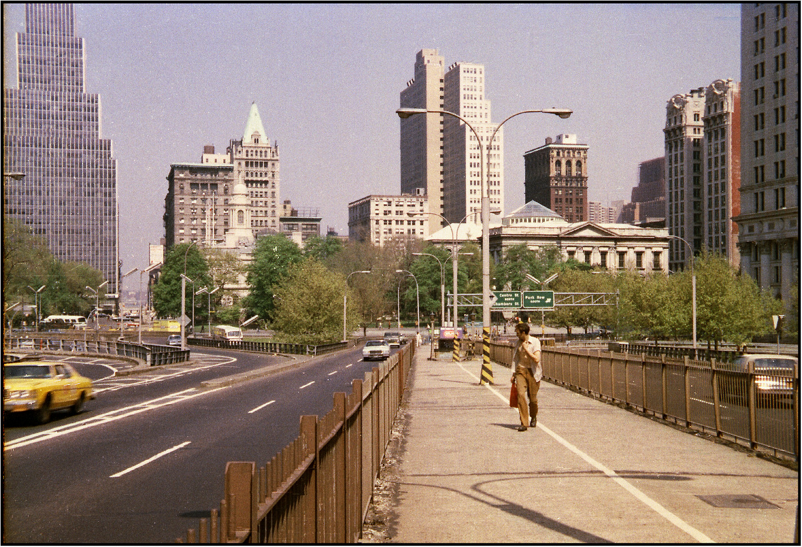
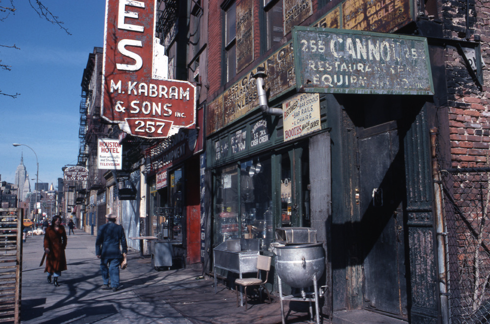
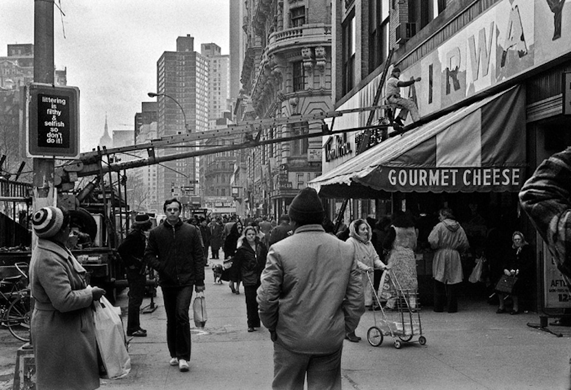
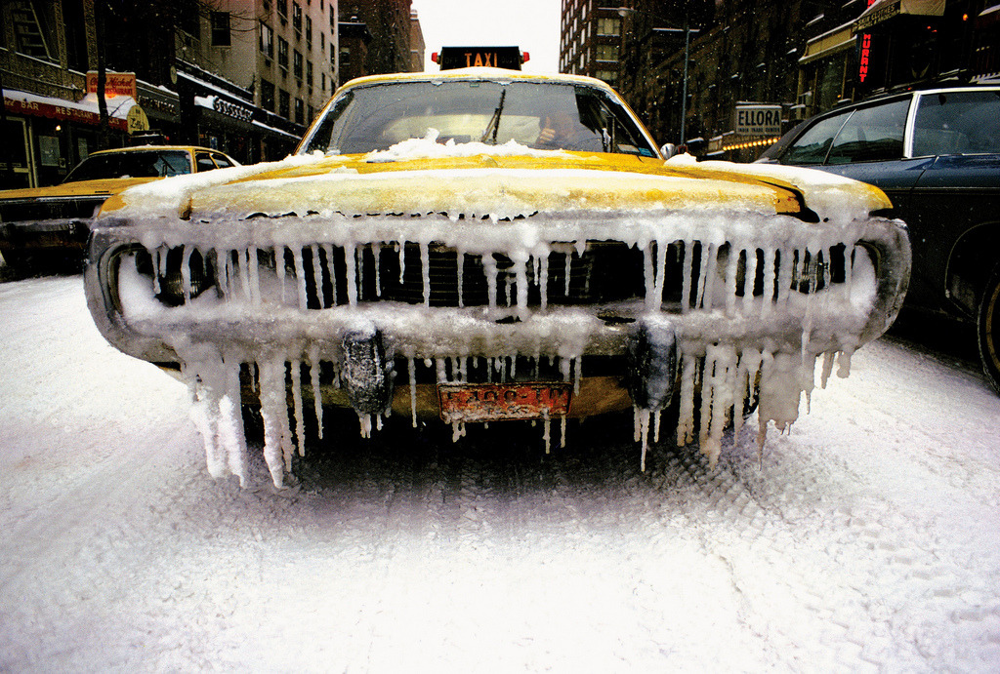
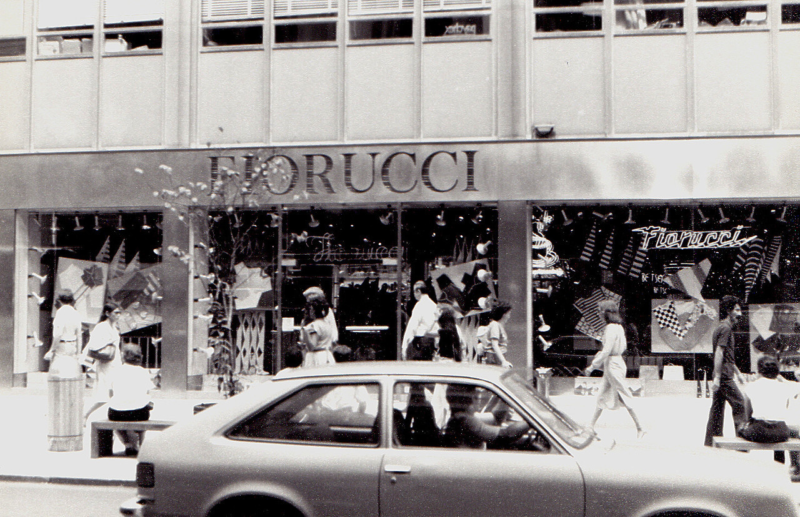
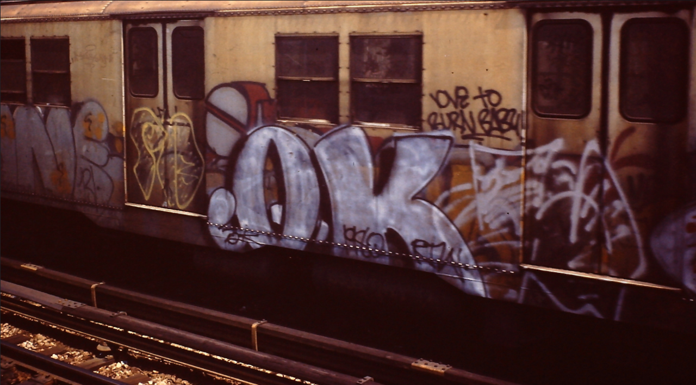

The classic neon signs of the P & G Bar & Grill on Amsterdam Avenue at West 73rd Street, as seen circa 1980. More here. Photo by Stephen Harmon.

The classic neon signs of the P & G Bar & Grill on Amsterdam Avenue at West 73rd Street, as seen circa 1980. More here. Photo by Stephen Harmon.

South Street at Peck Slip, facing Southwest, as seen circa 1981. Photo by Robert Mulero.
(Defaced) Lion’s Den by Lee Quiñones, Lower East Side, New York, c. 1989

Lex and 33rd, 1974

Herald Square, 1976

Midtown, 1973

Macy’s Thanksgiving Day Parade, ca. 1989
Photo by Jeremy Meyers
Staten Island Ferry, 1973

73rd and Broadway, 1970s
 Since I knew I would be there today, I wanted to take a picture to compare. Sadly I didn’t get the angle quite right and a lot of the snowfall is melted, but.
73rd and Broadway, 1970s
Apparently the Thanksgiving Day parade used to run by the Pussycat Theater

West Street in the West Village, 1979

Lizzy Mercier Descloux by Michel Esteban, New York, 1975

Parking lot between Warren and Murray, 1979.

NYC Subway map, 1970s

Entrance to the Brooklyn Bridge, 1979
Max’s Kansas City, New York, 1975. Fernando Natalici. Inkjet print

Looking north on Bowery, 1977

The power of music. Washington Square, 1978.
Andy Blair’s photograph of Lower Manhattan, 1979 (via here)

Fairway, 1978

Card players, South Bronx, c. 1970s

The West Side Cleanup, 1978

1974 icy cab

Brooklyn, New York, 1974

Fiorucci, on 59th Street between Park and Lex, 1980

1980 throw-up
Rocco’s Pastry, 1980

Colorful signage in Park Slope, 1974

Hellbound in Harlem